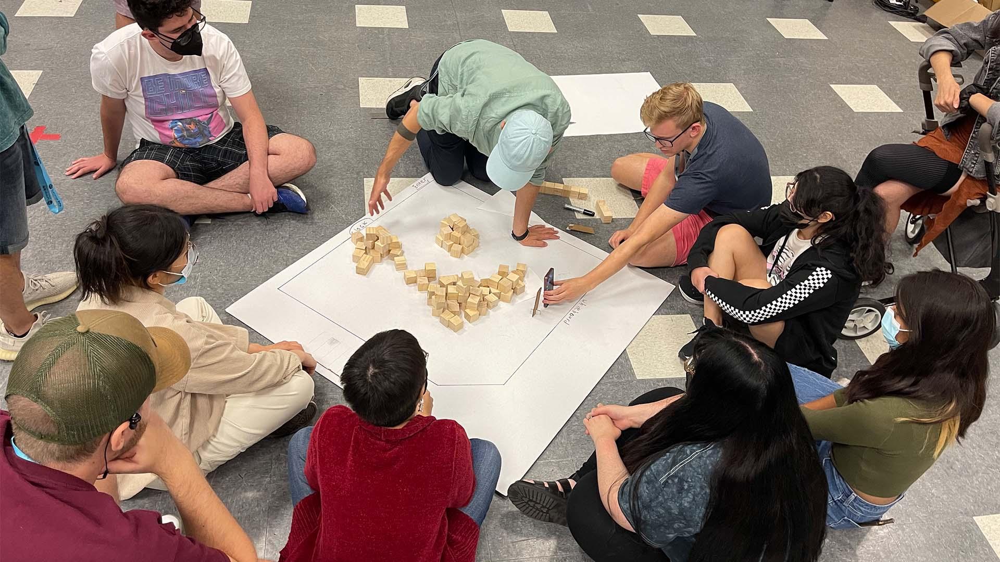
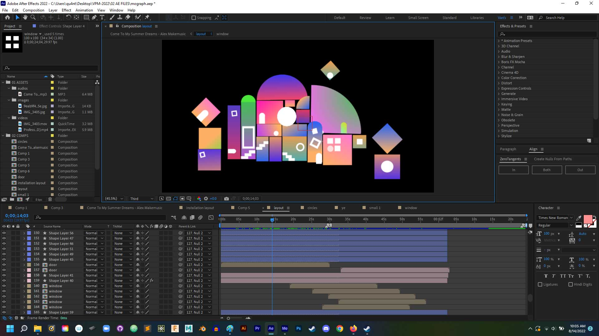
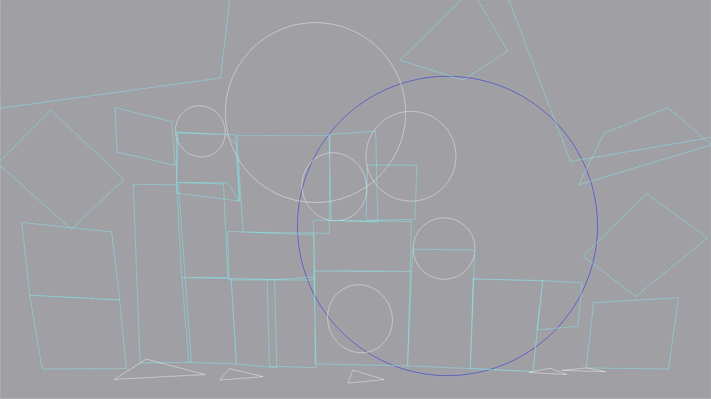
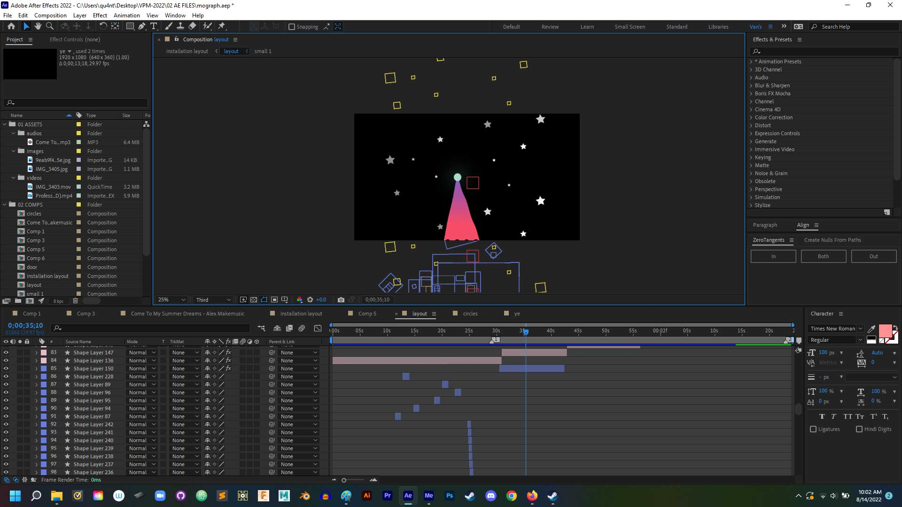

ABSTRACT CITY - "LE CONTE DES QUARTRES VILLES"
The Story
Le Conte des Quatres Villes (Tale of Four Cities) is a captivating experience telling the stories of four different cities of dreams. The exhibition will showcase video projection mapping and LED lighting on recyclable cardboard sculptures created by up and coming artists from a wide variety of disciplines across North America. This work by the students of Video Projection Mapping in 3D Space (VPM3D v3.0) presents contemporary principles of 3D video mapping using drawing, illustration, sculpture, motion graphics and installation. Workshop participants design, build, and create a large-scale work in collaboration with international visiting artist Yannick Jacquet, a pioneer of video projection mapping.
The Structure
"Le Conte des Quatres Villes" is a large-scale installation project with the theme of “The City of Your Dream.” There are 5 different cities with a total of 7 sections: 2 sections of Modern City, 2 sections of Abstract City, 2 sections of Mushroom City, and 1 section of Overgrown City. This project required students to finish their artwork within approximately 2 weeks of intensive crafting 3D objects for the installation, technical solving, as well as content making using a new software – MadMapper. (Yes, we worked from 9AM till 9PM everyday for the last week!)

Abstract City: The Concept
I took part in creating one section for Abstract City. With a playful and experimental approach, my version of Abstract City is a lively, funky place where shapes and colors live in harmony. My interpretation of an Abstract City was a surreal utopia, giving the audience a feeling of amazement and magic. To make the city look dreamlike, I added gradient bright light colors with the main shades of purple and pink.
Work in process
As a class, we folded and taped about 200 small and 50 large cardboard boxes.
For my installation particularly, I put put together more than 35 small and about 10 large cardboard boxes to create the structure of the city.
The next step was for me to cut up some cardboards, draw outlines, and reassemble them to create round-edged shapes such as circles, semicircles, and a part of a cylinder to add more variation to the city.
Not only is “Abstract City” a projection mapping project, there is also a motion graphic design project of itself, in which I created an animated video using After Effect in sync with 3 different audio soundtracks to bring all the elements to life, as if they are dancing to the music.
Projection mapping practicing
LED light experimenting
Abstract City's Projection mapping Layout
Abstract City in After Effect
The projected visual design elements are animated shapes creating abstract composition within the actual installation. I hope the audience have the best experience watching this projection mapping show while emerging themselves in the 3D exhibition space in person.
Credits
Abstract City of "Le Conte des Quatres Villes" - A project by Van Nguyen.
✨SPECIAL THANKS TO:
Guest Artist: Yannick Jacquet
Professor: Gary Craig Hobbs
Teacher Assistants: Tyler Stannard
Installation/ Tech Support: John Joseph Santos & Marc Cordonero
✨Music: “Come To My Summer Dreams” - Alex Makemusic
Video Editing: Van Nguyen
CSU Summer Arts 2022
VPM3D V3.0
Student Showcase "Le Conte des Quatres Villes"